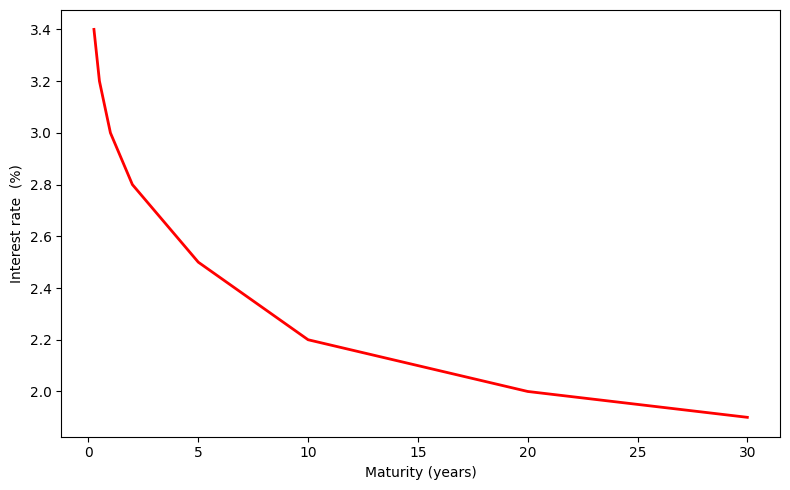

Introducing the Vasicek model
Term structure interest rate modelling
An interest rate, also referred as the term structure, represents the cost of borrowing money from another counterparty, for example a bank. It reflects the price paid for the use of capital over time. Interest rates also embed market expectations. For instance, when interest rates are low, lenders are generally willing to provide funds at a lower cost, which may reflect confidence in economic and political stability. Conversely, higher interest rates can indicate greater perceived risk, such as concerns about inflation, credit risk, or macroeconomic instability.
To obtain a global view of interest rates at a given date \(t\), one typically plots the interest rate as a function of maturity. This gives rise to what is called the term structure of interest rates. It describes the relationship between interest rates and the time to maturity of debt. In other words, it shows the rate at which investors are willing to lend money for different horizons (i.e. dates of reimbursement). To extract the interest rate, it is common to use a financial product, such as a zero-coupon bond, because the link between price and interest rate is simple and determined by an analytical formula.
In this article, we focus on a specific model of the term structure of interest rates: the Vasicek model. We first explain its relationship with zero-coupon bond pricing and show how to move from the short-rate dynamics to bond prices, then introduce the model and its advantages. Finally, we discuss the limitations of the model, and suggest possible extensions to better capture the observed shape of the yield curve.
The yield curve vs the zero-coupon bond pricing
As mentioned in the introduction, the yield curve is a function \(T \mapsto r(T)\) that represents, for each given maturity, the interest rate at which an individual can borrow or is willing to lend. In normal economic conditions, the yield curve is often upward sloping, meaning that long-term interest rates are higher than short-term rates. However, during periods of economic stress or when markets anticipate a recession, the curve may flatten or even become inverted. Therefore, the shape of the yield curve provides valuable information about market expectations regarding future interest rates, economic growth, and inflation.


Left: In normal economic conditions, the yield curve is typically upward sloping, meaning that long-term rates exceed short-term rates.
Right: An inverted yield curve occurs when short-term rates are higher than long-term rates, often reflecting recession expectations.
Interest rates are also used as discount factors. They allow us to determine the present value of money to be received at a future date. For example, if A lends 1 euro today at an interest rate \(r\), it means that he will be reimbursed \(1 + r\) at time \(T\). Therefore, the 1 euro lent today will be worth \(1+r\) in the future. Conversely, by a simple proportional reasoning, 1 euro to be received in the future corresponds to a present value of \(\frac{1}{1+r}\) today.
To get more informations about interest rate use, check the article intitulated Types of interest rates and rates derivatives.
Interest rate is not a traded product in the market. So they cannot be observe directly. Hence, one often use derivatives in other th know the quantity of the derivatives. In the case of a zero-coupon bond (ZC bond), the link between price and interest rate is particularly simple, as it is given by an analytical formula. In fact, let \(B(t,T)\) be the price of a zero-coupon bond and \(R(t,T)\) the interest rate associated. In continuous compounding interest rate, we have that : \[ R(t,T) = -\frac{1}{T-t} \ln(B(t,T)). \]
Therefore, one can represent the term structure through the zero-coupon bond prices as a function of maturity. By the way, since a zero-coupon bond is a product traded in the market, its price can be expressed as the expected discounted payoff under the risk-neutral measure:
\[ B(t,T) = \mathbb{E}^{\mathbb{Q}}\left[ \exp\left(-\int_t^T r_s ds \right) \middle| \mathcal{F}_t \right]. \quad (*) \]
Hence, modeling the short rate process (\(r_t\)) directly determines the bond price dynamics. In other words, specifying a model for \(r_t\) allows us to derive the entire term structure of interest rates and compute zero-coupon bond prices for all maturities.
A specific case of term structure modelling : The vasicek model
The Vasicek model (Vasicek 1977) was introduced in 1977 by Oldřich Vašíček to model the short rate process \(r_t\). It is inspired by the Ornstein–Uhlenbeck process, which is a Gaussian Markov process.
We work on \((\Omega,(\mathcal{F}_t), \mathbb{Q})\), and the model assumes that the dynamics of \(r_t\) are given by:
\[ dr_t = k(\theta - r_t),dt + \sigma, dW_t, \]
with \(W_t\) a Brownian motion under the probability measure \(\mathbb{Q}\).
The drift \(k(\theta - r_t)\) represents the force that keeps pulling the short rate \(r_t\) towards its long-term mean \(\theta\), with \(k>0\) as the mean-reversion speed. The process has a constant instantaneous variance \(\sigma^2\), causing the short rate to fluctuate around \(\theta\).
Moreover, the SDE admits a unique strong solution since the coefficients are Lipschitz and of linear growth. Furthermore, by applying Itô’s formula to \(e^{kt}r_t\), we have for \(0 \le s \le t\):
\[ r_t = r_s e^{-k(t-s)} + \theta \left( 1 - e^{-k(t-s)} \right) + \sigma \int_s^t e^{-k(t-u)} dW_u. \]
Hence, the conditional moments of \(r_t\) are given by:
\(\mathbb{E}[r_t \mid \mathcal{F}_s] = r_s e^{-k(t-s)} + \theta \left( 1 - e^{-k(t-s)} \right)\)
\(\mathbb{V}[r_t \mid \mathcal{F}_s] = \frac{\sigma^2}{2k} \left( 1 - e^{-2k(t-s)} \right)\).
Using the link between the short rate and the zero-coupon bond price (*), since \(\int_t^T r_u,du \mid \mathcal{F}_t\) is Gaussian, pricing reduces to computing the Laplace transform of a normal random variable. Hence, omitting some computational details, the bond price can be written in an affine form with respect to the short rate:
\[ \begin{align} B(t,T) &= \mathbb{E}^{\mathbb{Q}}\left[ \exp\left(-\int_t^T r_u,du \right) \middle| \mathcal{F}_t \right] [4pt] &= \exp\left( m(t,T) - n(t,T), r_t\right), \end{align} \]
with \(n(t,T) := \frac{ 1 - e^{-k(T-t)}}{k},\) and \(m(t,T) := \left( \theta - \frac{\sigma^2}{2k^2} \right)\left(B(t,T) - (T-t)\right) - \frac{\sigma^2}{4k},B(t,T)^2.\)
Now, recalling the link between the zero-coupon bond price \(B(t,T)\) and the term structure interest rate \(R(t,T)\), i.e. \(R(t,T) = -\frac{1}{T-t}\ln B(t,T)\), we obtain an analytical expression for the yield:
\[ R(t,T) = R(\infty) + (r_t - R(\infty)) \frac{ 1 - e^{-k(T-t)}}{k(T-t)} + \frac{\sigma^2}{4k^3 (T-t)} \left( 1 - e^{-k(T-t)} \right)^2, \]
with \(R(\infty) = \lim_{T \rightarrow \infty} R(t,T) = \theta - \frac{\sigma^2}{2k^2}.\)
Limitations of the Vasicek model
Despite its widespread use, the Vasicek model has several limitations due to the assumptions it relies on:
Negative interest rates : The model allows the short rate to become negative, since it follows a Gaussian process. Historically, this was considered unrealistic. However, recent market environments with negative policy rates have made the Vasicek framework more relevant in certain contexts for modeling short-rate dynamics and extracting a yield curve.
Constant volatility : The model assumes constant volatility \(\sigma\), which is often violated in real-world markets. In practice, interest rate volatility is time-dependent and state-dependent. Moreover, market data (e.g., cap and swaption prices) exhibit volatility smiles and skews, which cannot be captured by a single Gaussian factor with constant volatility.
One-factor model : The Vasicek model is a one-factor model, meaning that the entire term structure is driven by a single source of randomness (one Brownian motion). This implies perfect correlation between rate movements across maturities. Such a simplification may not capture the empirical complexity of interest rate dynamics, where multiple factors (level, slope, curvature) are typically required.
Calibration to the initial yield curve : Due to the small number of parameters \((k, \theta, \sigma)\), the Vasicek model cannot perfectly match the observed initial zero-coupon yield curve. To overcome this limitation, one can introduce a time-dependent mean-reversion level \(\theta(t)\). This leads to the Hull–White extension (Hull and White 2001), which allows exact calibration to the initial term structure.